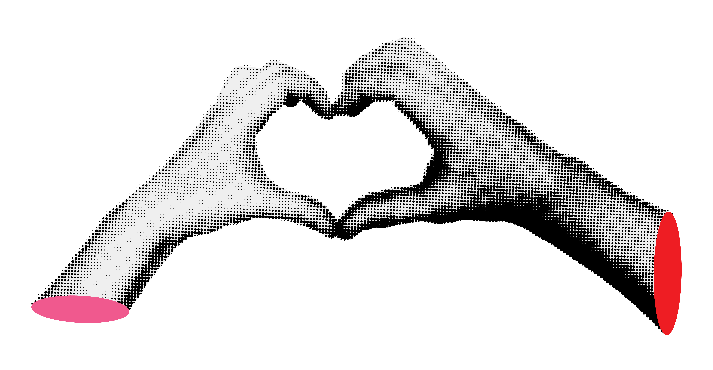

DAY ONE 5/23

Sexual Health Education Panel
2:00PM - 4:00PM
Join experts in reproductive health for an engaging discussion on contraception,
STI prevention, and accessing care. Ask questions, and leave with resources to take
control of your sexual health.
Resource Fair
All Day Event
Explore booths from clinics, legal aid organizations, women's advocacy groups, art vendors,
and more. Discover vital resources, connect with experts, and take actionable steps for reproductive justice.
DAY TWO 5/24

Professional Panel
2:00PM - 4:00PM
Join a discussion featuring medical professionals and legal experts as
they dive into the complexities of reproductive healthcare. This panel will explore
key issues, share insights, and answer your pressing questions to empower informed
choices and action.
Zine Workshop
All Day Event
Unleash your creativity in this hands-on workshop where you'll make zines to amplify voices and share stories about reproductive rights. Materials provided- attendees can take their reproductive healthcare zines home or have them on display for the festival!
DAY THREE 5/25
11:00AM
Close out the festival with three outspoken artists
fighting for women's rights to bodily autonomy!
Performances by Janelle Monae, Olivia Rodrigo, and Cyndi Lauper.